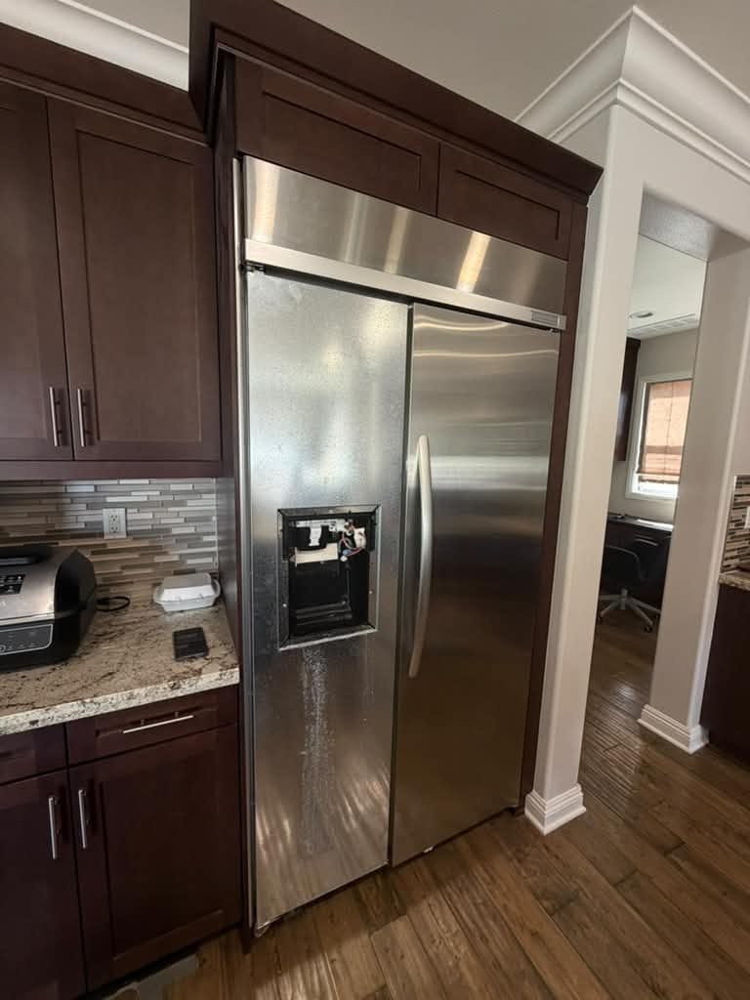

Brea, CA
KitchenAid Refrigerator Water Leak Repair
Great service. Very communicative. Very professional. Challenging repair on my built in. Working like new again.
Serving Downtown Brea, La Floresta, Olinda Village and all of north Orange County. Same-day service. Licensed and insured.
5.0 · 162 Google reviewsMon–Sat, 8am–7pm. Two-hour arrival window. The technician calls before arriving.
See neighborhoods and ZIP codes
Family-owned since 2017 · Licensed, bonded & insured
A KitchenAid built-in refrigerator in a Brea kitchen that we repaired for a water leak.
Brea, CA
Great service. Very communicative. Very professional. Challenging repair on my built in. Working like new again.
From our 162 verified 5-star Google reviews
Thank you for fixing my microwave!
Job was done quickly and results are great.
Excellent service and affordable with great customer service. Highly recommend.
From refrigerators and ovens to washers and disposals, we repair every major home appliance. Each service links to its full Orange County hub page with brand coverage and common symptoms.
Estimates vary by brand, part availability, and diagnosis. Full pricing guide
Brea stretches from the Downtown core and the 57 freeway corridor up into the Carbon Canyon foothills. We cover every neighborhood in both ZIP codes, with no travel surcharges.
Walkable core around Birch Street Promenade. Mix of older condos and newer infill with a range of appliance brands.
Newer master-planned community off Imperial Highway. Higher concentration of built-in and panel-ready appliances.
Hillside community in northeast Brea with large newer homes. Common requests include Sub-Zero and Wolf repairs.
Quiet established neighborhood near Carbon Canyon Road and Carbon Canyon Regional Park.
Established 1970s and 1980s tract homes in east Brea. We frequently service aging original appliances here.
Single-family neighborhood in central Brea with a mix of appliance brands across home ages.
Hillside homes north of Lambert Road with views over the city and a mix of mainstream and premium kitchens.
Hillside community in southwest Brea near the Brea Golf Course. Established single-family homes.
Semi-rural eastern Brea along Carbon Canyon Road, bordering Chino Hills. We cover every address out to the county line.
Brea sits at the northern edge of Orange County, bordering La Habra, Fullerton, Yorba Linda, and Placentia. It grew up around oil in the early 1900s, a history preserved at the Olinda Oil Museum and Trail, and today it is best known for the Brea Mall and the open-air Birch Street Promenade downtown. Families head to Carbon Canyon Regional Park for its redwood grove, the Brea Sports Park for weekend games, and the Tracks at Brea, a rail-to-trail path that runs through the heart of the city. Brea's housing splits between mature tract neighborhoods with original appliances and newer communities like La Floresta full of built-in units, which is exactly the range of repairs we handle here week to week. If your freezer has stopped holding temperature, our guide to freezer repair in Brea walks through the most common causes and fixes.
Most repairs are completed in a single visit. Here are the symptoms we diagnose every day across Brea.
Brea is a city of two housing eras. The 1960s and 1970s tract homes in Country Hills and Glenbrook often still run their original mainstream appliances, while newer communities like La Floresta and Blackstone bring built-in and panel-ready luxury units. We service both, end to end. We also service Dacor and DCS.
Independent repair service. Not affiliated with or endorsed by these manufacturers; brand names and logos are trademarks of their owners. If your appliance is still under manufacturer warranty, check with the manufacturer before booking.
Universal Appliances Repair Group Inc. provides same-day service in Brea for refrigerators, washers, dryers, dishwashers, ovens, stoves, freezers, wine coolers, and garbage disposals. We cover Downtown Brea, Olinda Village, La Floresta, Blackstone, Country Hills, Glenbrook, and North Hills, across ZIP codes 92821 and 92823, for Whirlpool, GE, Samsung, LG, and built-in Sub-Zero, Wolf, Thermador, and Viking units.
Same-day appointments are available when you call before midday. We also serve nearby La Habra, Fullerton, Placentia, and Yorba Linda. Call (949) 629-5365 or book online.
Still have a question? Call (949) 629-5365.
Same-day service available in Downtown Brea, La Floresta, Olinda Village, and all of Brea. Licensed technicians, 90-day parts / 30-day labor warranty on every repair.